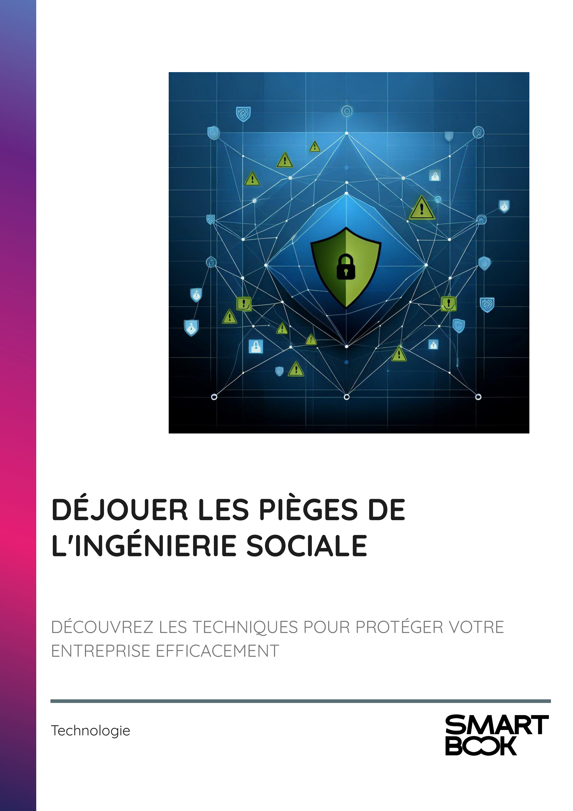

▶
Vitesse
++
+
=
-
--
INTRODUCTION - PROTÉGER VOTRE ENTREPRISE CONTRE LES MENACES INVISIBLES
Chapitre 1 - INTRODUCTION À L'INGÉNIERIE SOCIALE : DÉFINITION ET ENJEUX
1.1 - Définir l'ingénierie sociale
1.2 - Les enjeux pour les entreprises
1.3 - Les motivations des attaquants
Chapitre 2 - LES TECHNIQUES D'INGÉNIERIE SOCIALE
2.1 - Phishing
2.2 - Pretexting
2.3 - Baiting
Chapitre 3 - PHISHING : COMPRENDRE ET SE DÉFENDRE
3.1 - Les différentes formes de phishing
3.2 - Signaux d'alerte dans les emails
3.3 - Outils pour contrer le phishing
Chapitre 4 - PRETEXTING : SCÉNARIOS ET PRÉVENTION
4.1 - Exemples de scénarios de pretexting
4.2 - Techniques pour vérifier l'authenticité
4.3 - Formation des employés
Chapitre 5 - BAITING : LES PIÈGES À ÉVITER
5.1 - Les formes courantes de baiting
5.2 - Les impacts du baiting sur les entreprises
5.3 - Stratégies pour éviter le baiting
Chapitre 6 - SIGNAUX D'ALERTE ET ERREURS COURANTES DES DIRIGEANTS
6.1 - Identifier les signaux d'alerte
6.2 - Les erreurs fréquentes des dirigeants
6.3 - Le rôle des dirigeants dans la prévention
Chapitre 7 - STRATÉGIES DE PRÉVENTION ET DE RÉPONSE
7.1 - Établir des protocoles de sécurité
7.2 - Réagir efficacement aux incidents
7.3 - Améliorer la résilience organisationnelle
Chapitre 8 - RÔLE DE LA FORMATION CONTINUE DANS LA CYBERSÉCURITÉ
8.1 - L'importance de la sensibilisation
8.2 - Programmes de formation efficaces
8.3 - Mesurer l'efficacité de la formation
CONCLUSION - VERS UNE RÉSILIENCE COLLECTIVE FACE AUX CYBERMENACES
📄 Consulter les annexes du livre
Mentions légales